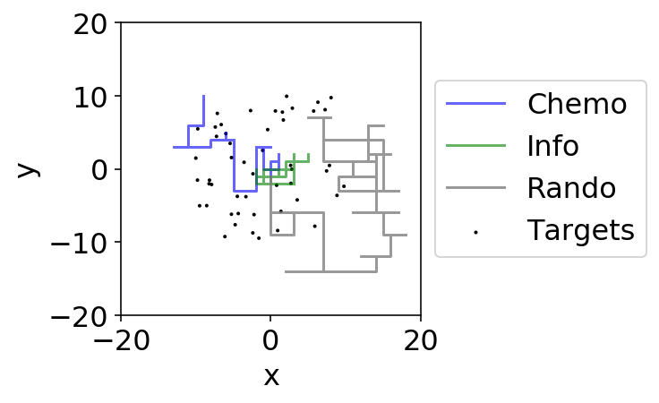
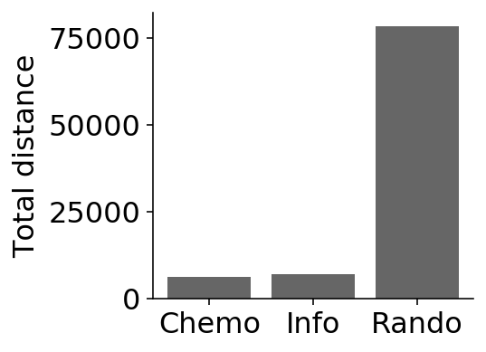
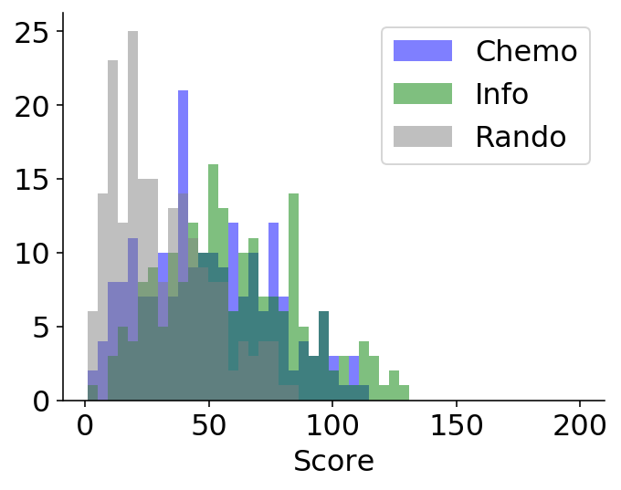

Testing - scent grid w/ patches of missing values - 2#
Grad versus Info Experimental params taken from the Air Quotes lab
import shutil
import glob
import os
import numpy as np
import pandas as pd
import seaborn as sns
import matplotlib.pyplot as plt
import explorationlib
from explorationlib.local_gym import ScentGrid
from explorationlib.agent import DiffusionGrid
from explorationlib.agent import AccumulatorGradientGrid
from explorationlib.agent import AccumulatorInfoGrid
from explorationlib.run import experiment
from explorationlib.util import select_exp
from explorationlib.util import load
from explorationlib.util import save
from explorationlib.local_gym import uniform_targets
from explorationlib.local_gym import constant_values
from explorationlib.local_gym import ScentGrid
from explorationlib.local_gym import create_grid_scent
from explorationlib.local_gym import create_grid_scent_patches
from explorationlib.plot import plot_position2d
from explorationlib.plot import plot_length_hist
from explorationlib.plot import plot_length
from explorationlib.plot import plot_targets2d
from explorationlib.plot import plot_scent_grid
from explorationlib.plot import plot_targets2d
from explorationlib.score import total_reward
from explorationlib.score import num_death
pygame 2.0.1 (SDL 2.0.14, Python 3.6.7)
Hello from the pygame community. https://www.pygame.org/contribute.html
# Pretty plots
%matplotlib inline
%config InlineBackend.figure_format='retina'
%config IPCompleter.greedy=True
plt.rcParams["axes.facecolor"] = "white"
plt.rcParams["figure.facecolor"] = "white"
plt.rcParams["font.size"] = "16"
# Uncomment for local development
%load_ext nb_black
%load_ext autoreload
%autoreload 2
p_neg=1, p_pos=0.0#
There are the best setting for no noise
# Agents
diff = DiffusionGrid(min_length=min_length, scale=1)
diff.seed(seed_value)
chemo = AccumulatorGradientGrid(
min_length=min_length,
max_steps=max_steps,
drift_rate=1,
threshold=3,
accumulate_sigma=1
)
chemo.seed(seed_value)
info = AccumulatorInfoGrid(
min_length=min_length,
max_steps=max_steps,
drift_rate=1,
threshold=3,
accumulate_sigma=1
)
info.seed(seed_value)
# !
rand_exp = experiment(
f"rand",
diff,
env,
num_steps=num_steps,
num_experiments=num_experiments,
dump=False,
split_state=True,
seed=seed_value
)
chemo_exp = experiment(
f"chemo",
chemo,
env,
num_steps=num_steps * cog_mult,
num_experiments=num_experiments,
dump=False,
split_state=True,
seed=seed_value
)
info_exp = experiment(
f"info",
info,
env,
num_steps=num_steps * cog_mult,
num_experiments=num_experiments,
dump=False,
split_state=True,
seed=seed_value
)
rand: 100%|██████████| 200/200 [00:28<00:00, 7.12it/s]
chemo: 100%|██████████| 200/200 [00:40<00:00, 4.97it/s]
info: 100%|██████████| 200/200 [00:59<00:00, 3.36it/s]
Example#
plot_boundary = (20, 20)
# -
num_experiment = 99
ax = None
ax = plot_position2d(
select_exp(chemo_exp, num_experiment),
boundary=plot_boundary,
label="Chemo",
color="blue",
alpha=0.6,
ax=ax,
)
ax = plot_position2d(
select_exp(info_exp, num_experiment),
boundary=plot_boundary,
label="Info",
color="green",
alpha=0.6,
ax=ax,
)
ax = plot_position2d(
select_exp(rand_exp, num_experiment),
boundary=plot_boundary,
label="Rando",
color="grey",
alpha=0.8,
ax=ax,
)
ax = plot_targets2d(
env,
boundary=plot_boundary,
color="black",
alpha=1,
label="Targets",
ax=ax,
)

Total distance#
# Results
results = [chemo_exp, info_exp, rand_exp]
names = ["Chemo", "Info", "Rando"]
colors = ["blue", "green", "grey"]
# Score by eff
scores = []
for name, res, color in zip(names, results, colors):
l = 0.0
for r in res:
l += r["agent_total_l"][-1]
scores.append(l)
# Tabulate
m, sd = [], []
for (name, s, c) in zip(names, scores, colors):
m.append(np.mean(s))
sd.append(np.std(s))
# Plot means
fig = plt.figure(figsize=(4, 3))
plt.bar(names, m, yerr=sd, color="black", alpha=0.6)
plt.ylabel("Total distance")
plt.tight_layout()
sns.despine()

Deaths#
# Results
results = [chemo_exp, info_exp, rand_exp]
names = ["Chemo", "Info", "Rando"]
colors = ["blue", "green", "grey"]
# Score by eff
scores = []
for name, res, color in zip(names, results, colors):
scores.append(num_death(res))
# Tabulate
m, sd = [], []
for (name, s, c) in zip(names, scores, colors):
m.append(np.mean(s))
sd.append(np.std(s))
# Plot means
fig = plt.figure(figsize=(4, 3))
plt.bar(names, m, yerr=sd, color="black", alpha=0.6)
plt.ylabel("Deaths")
plt.tight_layout()
sns.despine()
num_death: 100%|██████████| 200/200 [00:00<00:00, 19774.66it/s]
num_death: 100%|██████████| 200/200 [00:00<00:00, 5919.23it/s]
num_death: 100%|██████████| 200/200 [00:00<00:00, 18096.06it/s]
Avg reward#
# Results
results = [chemo_exp, info_exp, rand_exp]
names = ["Chemo", "Info", "Rando"]
colors = ["blue", "green", "grey"]
# Score by eff
scores = []
for name, res, color in zip(names, results, colors):
r = total_reward(res)
scores.append(r)
# Tabulate
m, sd = [], []
for (name, s, c) in zip(names, scores, colors):
m.append(np.mean(s))
sd.append(np.std(s))
# Plot means
fig = plt.figure(figsize=(4, 3))
plt.bar(names, m, yerr=sd, color="black", alpha=0.6)
plt.ylabel("Avg. score")
plt.tight_layout()
sns.despine()
total_reward: 100%|██████████| 200/200 [00:00<00:00, 26291.63it/s]
total_reward: 100%|██████████| 200/200 [00:00<00:00, 13554.72it/s]
total_reward: 100%|██████████| 200/200 [00:00<00:00, 19209.09it/s]
Best exp#
# Results
results = [chemo_exp, info_exp, rand_exp]
names = ["Chemo", "Info", "Rando"]
colors = ["blue", "green", "grey"]
# Score by eff
scores = []
for name, res, color in zip(names, results, colors):
r = total_reward(res)
scores.append(r)
# Tabulate
m, sd = [], []
for (name, s, c) in zip(names, scores, colors):
m.append(np.max(s))
# Plot means
fig = plt.figure(figsize=(4, 3))
plt.bar(names, m, color="black", alpha=0.6)
plt.ylabel("Best score")
plt.tight_layout()
sns.despine()
total_reward: 100%|██████████| 200/200 [00:00<00:00, 26612.76it/s]
total_reward: 100%|██████████| 200/200 [00:00<00:00, 17785.66it/s]
total_reward: 100%|██████████| 200/200 [00:00<00:00, 10899.82it/s]
Reward histogram#
# Dists
fig = plt.figure(figsize=(5, 4))
for (name, s, c) in zip(names, scores, colors):
plt.hist(s, label=name, color=c, alpha=0.5,
bins=np.linspace(1, num_steps * cog_mult, 50))
plt.legend()
plt.xlabel("Score")
plt.tight_layout()
sns.despine()
